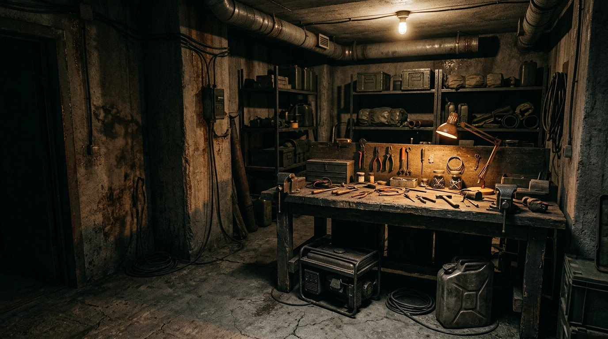

OUTIL / PRODUCTION
Calculez avec vos chiffres, pas avec un prix périmé
L’export regular compte 214 recettes; durée, déverrouillage et ingrédients sont propres au snapshot de chaque mode. Aucun cours flea ni barème de frais n’est inclus.
Les consommables sont additionnés au coût du lot; les outils requis sont listés à part. Le résultat n’est ni recommandation d’achat ni promesse de marge.

01 Sélection
Choisir une recette
Filtrez par mode, station et objet; renseignez les prix unitaires en roubles pour estimer votre lot.
214 recettes · regular.
Sélectionnez une recette avec JavaScript pour saisir vos prix et estimer le coût du lot.
Catalogue statique de référence · PvP permanent · 214 recettes
Bouteille de gnôle Bambi féroce ×1 · Alambic niveau 1 · 3 h 03 min
- 2 × Paquet de sucre · consommable
- 1 × Bidon d'eau purifiée Bozana · consommable
Decrypted intelligence folder ×1 · Centre de renseignement niveau 1 · 10 min
- 1 × Military thumb drive · consommable
Data from Fence's laptop ×1 · Centre de renseignement niveau 1 · 10 min
- 1 × Ramette de papier · consommable
- 1 × Carte graphique · outil réutilisable
Carte d'étude topographique ×1 · Centre de renseignement niveau 1 · 2 h 00 min
- 1 × Clé USB sécurisée · consommable
- 1 × Petit carnet · consommable
- 1 × Carnet · consommable
Reprogrammed keycard for A.P.'s apartment lock (Blue) ×1 · Centre de renseignement niveau 1 · 2 h 45 min
- 1 × Lecteur RFID UHF · outil réutilisable
- 1 × Carte d'accès TerraGroup Labs (bleue) · consommable
- 1 × Documents TerraGroup "Blue Folders" · consommable
Reprogrammed keycard for A.P.'s apartment lock (Red) ×1 · Centre de renseignement niveau 1 · 2 h 45 min
- 1 × Lecteur RFID UHF · outil réutilisable
- 1 × Carte d'accès TerraGroup Labs (rouge) · consommable
- 1 × Documents TerraGroup "Blue Folders" · consommable
Reprogrammed keycard for A.P.'s apartment lock (Green) ×1 · Centre de renseignement niveau 1 · 2 h 45 min
- 1 × Lecteur RFID UHF · outil réutilisable
- 1 × Carte d'accès TerraGroup Labs (verte) · consommable
- 1 × Documents TerraGroup "Blue Folders" · consommable
Disque SAS ×1 · Centre de renseignement niveau 1 · 3 h 00 min
- 1 × Trousse à outils · outil réutilisable
- 1 × Tournevis plat (long) · outil réutilisable
- 3 × Disque dur endommagé · consommable
- 2 × Aimant · consommable
Station 14-4 KORD Arshavin K. pass (Restored) ×1 · Centre de renseignement niveau 1 · 3 h 30 min
- 1 × Clé USB sécurisée · consommable
- 1 × Clé USB militaire · consommable
- 1 × Module de stockage flash VPX · consommable
Cassette à bande magnétique sécurisée ×1 · Centre de renseignement niveau 1 · 4 h 00 min
- 1 × Trousse à outils · outil réutilisable
- 1 × Tournevis plat (long) · outil réutilisable
- 3 × Aimant · consommable
- 1 × Composants électroniques · consommable
- 1 × Circuit imprimé · consommable
Reprogrammed RFID keycard with Mr. Kerman's hash codes ×1 · Centre de renseignement niveau 1 · 5 h 30 min
- 1 × Flash drive with Mr. Kerman's hash codes · outil réutilisable
- 1 × Blank RFID keycard · consommable
- 1 × Activated Kruglov's RFID keycard · outil réutilisable
Reprogrammed RFID keycard with Prapor's hash codes ×1 · Centre de renseignement niveau 1 · 5 h 30 min
- 1 × Flash drive with Prapor's hash codes · outil réutilisable
- 1 × Activated Kruglov's RFID keycard · outil réutilisable
- 1 × Blank RFID keycard · consommable
Hard drive printout ×1 · Centre de renseignement niveau 1 · 5 h 30 min
- 1 × Ramette de papier · consommable
- 3 × Circuit imprimé · consommable
- 2 × Processeur d'ordinateur · consommable
Clé USB sécurisée ×3 · Centre de renseignement niveau 1 · 8 h 00 min
- 1 × Composants électroniques · consommable
- 1 × Smartphone GPhone X cassé · consommable
- 1 × Disque SSD · consommable
Activated Kruglov's RFID keycard ×1 · Centre de renseignement niveau 1 · 23 h 30 min
- 1 × Blank RFID keycard · consommable
- 1 × Kruglov's RFID keycard · consommable
Carte d'accès TerraGroup Labs ×3 · Centre de renseignement niveau 2 · 40 min
- 1 × Lecteur RFID UHF · outil réutilisable
- 1 × Dossier de renseignements · consommable
Transpondeur radio numérique sécurisé DSP ×1 · Centre de renseignement niveau 2 · 2 h 00 min
- 1 × Transpondeur radio numérique sécurisé DSP · consommable
- 1 × Tournevis · outil réutilisable
- 1 × Composants électroniques · consommable
Documents TerraGroup "Blue Folders" ×1 · Centre de renseignement niveau 2 · 11 h 00 min
- 1 × Lecteur RFID UHF · outil réutilisable
- 2 × Clé USB sécurisée · consommable
- 1 × Clé USB militaire · consommable
- 2 × Dossier de renseignements · consommable
- 1 × Cassette à bande magnétique sécurisée · consommable
Lecteur RFID UHF ×1 · Centre de renseignement niveau 2 · 12 h 00 min
- 1 × Carte d'accès TerraGroup Labs · consommable
- 1 × Module de stockage flash VPX · consommable
- 1 × Manuel d'éléments électroniques avancés · outil réutilisable
- 1 × Clé USB sécurisée · consommable
Processeur programmable Virtex ×1 · Centre de renseignement niveau 2 · 23 h 00 min
- 2 × Circuit imprimé militaire · consommable
- 2 × Processeur d'ordinateur · consommable
- 5 × Condensateurs · consommable
- 2 × Fils conducteurs · consommable
- 2 × Composants électroniques · consommable
Carte d'accès #11SR ×1 · Centre de renseignement niveau 2 · 65 h 33 min
- 5 × Clé USB sécurisée · consommable
- 1 × Carte d'accès #21WS · consommable
- 1 × Lecteur RFID UHF · outil réutilisable
- 1 × Module de stockage flash VPX · outil réutilisable
- 1 × Cassette à bande magnétique sécurisée · consommable
Clé USB militaire ×1 · Centre de renseignement niveau 3 · 10 h 00 min
- 1 × Processeur programmable Virtex · outil réutilisable
- 2 × Clé USB sécurisée · consommable
- 2 × Carte d'étude topographique · consommable
Carte graphique ×1 · Centre de renseignement niveau 3 · 15 h 00 min
- 2 × Circuit imprimé · consommable
- 2 × Processeur d'ordinateur · consommable
- 2 × Ventilateur de processeur · consommable
- 1 × Module de stockage flash VPX · consommable
- 1 × Manuel d'éléments électroniques avancés · outil réutilisable
- 1 × Barrette de mémoire · consommable
- 4 × Composants électroniques · consommable
Carte d'accès TerraGroup Labs (rouge) ×1 · Centre de renseignement niveau 3 · 25 h 00 min
- 1 × Lecteur RFID UHF · outil réutilisable
- 10 × Carte d'accès TerraGroup Labs · consommable
- 5 × Documents TerraGroup "Blue Folders" · consommable
- 3 × Dossier de renseignements · consommable
- 3 × Module de stockage flash VPX · consommable
- 2 × Processeur programmable Virtex · consommable
- 4 × Cassette à bande magnétique sécurisée · consommable
Carte d'accès TerraGroup Labs (verte) ×1 · Centre de renseignement niveau 3 · 25 h 00 min
- 1 × Lecteur RFID UHF · outil réutilisable
- 10 × Carte d'accès TerraGroup Labs · consommable
- 5 × Documents TerraGroup "Blue Folders" · consommable
- 3 × Dossier de renseignements · consommable
- 5 × Clé USB militaire · consommable
- 2 × Processeur programmable Virtex · consommable
Dossier de renseignements ×1 · Centre de renseignement niveau 3 · 31 h 40 min
- 2 × Clé USB militaire · consommable
- 1 × Ramette de papier · consommable
Carte d'accès TerraGroup Labs (violette) ×1 · Centre de renseignement niveau 3 · 132 h 13 min
- 10 × Carte d'accès TerraGroup Labs · consommable
- 1 × Carte d'accès TerraGroup Labs (jaune) · consommable
- 4 × Dossier de renseignements · consommable
- 1 × Cassette à bande magnétique sécurisée · consommable
- 1 × Lecteur RFID UHF · outil réutilisable
Saucisse de bœuf Salty Dog ×3 · Cuisine niveau 1 · 33 min
- 1 × Salière · consommable
- 1 × Petite conserve de ragoût de bOeuf · consommable
- 1 × Papier toilette · consommable
- 1 × Compteur Geiger-Müller · outil réutilisable
Rations de combat MRE ×2 · Cuisine niveau 1 · 40 min
- 1 × Grande conserve de ragoût de bOeuf · consommable
- 2 × Biscuits militaires · consommable
- 1 × Barre chocolatée Slickers · consommable
Ration de combat Iskra ×2 · Cuisine niveau 1 · 48 min
- 2 × Biscuits militaires · consommable
- 1 × Petite conserve de ragoût de bOeuf · consommable
- 1 × Conserve de purée de courge · consommable
Bouteille de Kvass Premium "Norvinskiy Yadreniy" (0,6L) ×2 · Cuisine niveau 1 · 1 h 03 min
- 2 × Bouteille d'eau (0,6 L) · consommable
- 2 × Croûtons de seigle Emelya · consommable
Ration d'eau d'urgence ×2 · Cuisine niveau 1 · 1 h 07 min
- 1 × Bouteille d'eau (0,6 L) · consommable
- 1 × Ruban adhésif KEKTAPE · consommable
- 1 × Tube en silicone · outil réutilisable
Petite conserve de ragoût de bOeuf ×1 · Cuisine niveau 1 · 1 h 18 min
- 1 × Grande conserve de ragoût de bOeuf · consommable
- 1 × Conserve de purée de courge · consommable
- 1 × Croûtons de seigle · consommable
Cigarettes Wilston ×5 · Cuisine niveau 1 · 1 h 42 min
- 5 × Cigarettes Apollo Soyuz · consommable
- 1 × Thé Anglais 42nd Signature Blend · consommable
Canette de boisson énergétique Max Energy ×4 · Cuisine niveau 1 · 1 h 48 min
- 1 × Canette de soda TarCola · consommable
- 1 × Boite de grains de café Majaica · consommable
- 1 × Bouteille d'eau (0,6 L) · consommable
- 1 × Livre de cuisine BakeEzy · outil réutilisable
Barre chocolatée Slickers ×5 · Cuisine niveau 2 · 22 min
- 1 × Barre chocolatée Alyonka · consommable
- 1 × Biscuits militaires · consommable
Boite de grains de café Majaica ×2 · Cuisine niveau 2 · 45 min
- 1 × Boite de grains de café Dr. Lupo · consommable
- 1 × Poudre sans fumée "Kite" · consommable
Conserve de lait concentré ×3 · Cuisine niveau 2 · 1 h 22 min
- 1 × Paquet de sucre · consommable
- 1 × Brique de lait · consommable
Paquet de sucre ×1 · Cuisine niveau 2 · 1 h 23 min
- 2 × Barre chocolatée Alyonka · consommable
Grande conserve de ragoût de bOeuf ×3 · Cuisine niveau 2 · 2 h 30 min
- 4 × Petite conserve de ragoût de bOeuf · consommable
- 2 × Croûtons de seigle Emelya · consommable
Bouteille d'eau Aquamari avec filtre ×3 · Cuisine niveau 2 · 4 h 52 min
- 5 × Bouteille d'eau (0,6 L) · consommable
- 1 × Filtre à air pour masque à gaz · outil réutilisable
- 1 × Filtre à eau · outil réutilisable
- 1 × Flacon de vitamines OLOLO · consommable
Bouteille de vodka Tarkovskaya ×10 · Cuisine niveau 3 · 1 h 36 min
- 1 × Bouteille de gnôle Bambi féroce · consommable
- 5 × Bouteille d'eau (0,6 L) · consommable
Bouteille de whisky Dan Jackiel ×3 · Cuisine niveau 3 · 1 h 47 min
- 2 × Bouteille d'eau (0,6 L) · consommable
- 2 × Bouteille de vodka Tarkovskaya · consommable
- 1 × Barre chocolatée Alyonka · consommable
- 1 × Thé Anglais 42nd Signature Blend · consommable
- 1 × Filtre à eau · outil réutilisable
Bouteille d'eau (0,6 L) ×10 · Cuisine niveau 3 · 1 h 51 min
- 1 × Bidon d'eau purifiée Bozana · consommable
- 1 × Tube en silicone · outil réutilisable
Bouteille de bière "Pevko Light" ×10 · Cuisine niveau 3 · 10 h 00 min
- 5 × Croûtons de seigle · consommable
- 3 × Bouteille de Kvass Premium "Norvinskiy Yadreniy" (0,6L) · consommable
- 1 × Bidon d'eau purifiée Bozana · consommable
Canette de boisson énergétique Hot Rod ×20 · Cuisine niveau 3 · 12 h 00 min
- 1 × Bidon d'eau purifiée Bozana · consommable
- 1 × Paquet de sucre · consommable
- 1 × Boite de grains de café Majaica · consommable
- 1 × Thé Anglais 42nd Signature Blend · consommable
- 1 × Filtre à eau · outil réutilisable
- 1 × Livre de cuisine BakeEzy · outil réutilisable
Bitcoin physique ×1 · Ferme à Bitcoin niveau 1 · 83 h 20 min
- Aucun ingrédient listé.
Bouteille d'eau (0,6 L) ×1 · Récupérateur d'eau niveau 1 · 20 min
- 1 × Bouteille d'eau (0,6 L) · consommable
Ration d'eau d'urgence ×2 · Récupérateur d'eau niveau 2 · 30 min
- 1 × Brique de jus de pamplemousse "Grand" · consommable
- 1 × Tube en silicone · outil réutilisable
Bouteille d'eau Aquamari avec filtre ×5 · Récupérateur d'eau niveau 2 · 1 h 00 min
- 5 × Bouteille d'eau (0,6 L) · consommable
- 1 × Tablettes de purification d'eau Aquapeps · consommable
Bidon d'eau purifiée Bozana ×1 · Récupérateur d'eau niveau 3 · 5 h 25 min
- 0.66 × Filtre à eau · consommable
Filtre à air pour masque à gaz ×1 · Sanitaires niveau 1 · 2 min
- 1 × Masque à gaz GP-7 · consommable
- 1 × Tournevis · outil réutilisable
Bandage militaire ×10 · Sanitaires niveau 1 · 17 min
- 5 × Bandage stérile · consommable
- 1 × Bouteille de vodka Tarkovskaya · consommable
Casque 6B47 Ratnik-BSh (Digital Flora) ×1 · Sanitaires niveau 1 · 20 min
- 1 × Tissu en fibres d'aramide · consommable
- 1 × Ruban adhésif · consommable
- 1 × Nécessaire de couture · outil réutilisable
Sac à dos Scav ×1 · Sanitaires niveau 1 · 20 min
- 1 × Tissu Cordura polyamide · consommable
- 1 × Ruban adhésif isolant · consommable
Papier toilette ×2 · Sanitaires niveau 1 · 26 min
- 1 × Ramette de papier · consommable
Bandage stérile ×6 · Sanitaires niveau 1 · 32 min
- 1 × Tissu polaire · consommable
Tissu en fibres d'aramide ×2 · Sanitaires niveau 1 · 33 min
- 1 × Gilet pare-balles souple PACA · consommable
- 1 × Pince multifonction Leatherman · outil réutilisable
Shampoing Schaman ×2 · Sanitaires niveau 1 · 35 min
- 1 × Savon · consommable
- 1 × Bouteille de bière "Pevko Light" · consommable
Tissu Ripstop ×2 · Sanitaires niveau 1 · 37 min
- 1 × Gilet de scav · consommable
- 1 × Nécessaire de couture · outil réutilisable
Tissu Cordura polyamide ×2 · Sanitaires niveau 1 · 48 min
- 2 × Sac bandoulière tactique (kaki) · consommable
- 1 × Nécessaire de couture · outil réutilisable
Savon ×6 · Sanitaires niveau 1 · 50 min
- 1 × Nettoyant alcalin pour échangeurs de chaleur · consommable
- 1 × Salière · consommable
- 1 × Saucisse de bœuf Salty Dog · consommable
Gilet pare-balles BNTI Module-3M ×1 · Sanitaires niveau 1 · 54 min
- 1 × Tissu en fibres d'aramide · consommable
- 1 × Tissu Ripstop · consommable
Grenade fumigène RDG-2B ×6 · Sanitaires niveau 1 · 1 h 00 min
- 1 × Sachet de chlore · consommable
- 1 × Allumettes tempête · consommable
- 1 × Ruban adhésif · consommable
- 1 × Papier toilette · consommable
Gilet pare-balles BNTI Zhuk (presse) ×1 · Sanitaires niveau 1 · 1 h 07 min
- 1 × Tissu en fibres d'aramide · consommable
- 1 × Tissu Ripstop · consommable
- 1 × Plaque balistique Zhuk-3 (avant) · consommable
Chargeur 6L31 5,45 x 39 mm 60 coups pour AK-74 ×1 · Sanitaires niveau 1 · 1 h 23 min
- 4 × Chargeur 6L23 5,45 x 39 mm 30 coups pour AK-74 · consommable
- 1 × Ruban adhésif KEKTAPE · consommable
- 1 × Tournevis plat (long) · outil réutilisable
Gilet pare-balles 6B23-2 (Mountain Flora) ×1 · Sanitaires niveau 1 · 1 h 57 min
- 1 × Plaque balistique 6B33 (avant) · consommable
- 1 × Tissu Cordura polyamide · consommable
- 1 × Eau de javel Ox · consommable
- 1 × Tissu en fibres d'aramide · consommable
Tuyau ondulé ×2 · Sanitaires niveau 1 · 3 h 22 min
- 1 × Tube en silicone · consommable
- 3 × Fils conducteurs · consommable
- 3 × Ruban adhésif isolant · consommable
Plaques balistiques 6B13 modifiées (arrière) ×1 · Sanitaires niveau 2 · 27 min
- 1 × Plaque balistique 6B23-2 (arrière) · consommable
- 1 × Tube de soudure à froid Poxeram · consommable
- 1 × Ruban adhésif · consommable
- 1 × Masse Fierce Blow · outil réutilisable
- 1 × Perceuse électrique · outil réutilisable
Gilet tactique porte-plaques FirstSpear Strandhogg (Ranger Green) ×1 · Sanitaires niveau 2 · 33 min
- 1 × Tissu Ripstop · consommable
- 1 × Tissu en fibres d'aramide · consommable
- 2 × Tissu Cordura polyamide · consommable
- 1 × Cisaille à tôle · outil réutilisable
- 1 × Plaque balistique NewSphereTech niveau III · consommable
Eau de javel Ox ×3 · Sanitaires niveau 2 · 38 min
- 1 × Savon · consommable
- 1 × Nettoyant alcalin pour échangeurs de chaleur · consommable
- 1 × Paquet de bicarbonate de sodium · consommable
Lave-vitre Clin ×2 · Sanitaires niveau 2 · 41 min
- 1 × Bouteille de vodka Tarkovskaya · consommable
- 1 × Shampoing Schaman · consommable
- 1 × Tube en silicone · outil réutilisable
Sac à dos Eberlestock F5 Switchblade (Dry earth) ×1 · Sanitaires niveau 2 · 42 min
- 2 × Tissu Ripstop · consommable
- 2 × Tissu Cordura polyamide · consommable
- 1 × Nécessaire de couture · outil réutilisable
- 1 × Eau de javel Ox · consommable
Tissu polaire ×1 · Sanitaires niveau 2 · 43 min
- 2 × Bonnet UX PRO · consommable
- 1 × Nécessaire de couture · outil réutilisable
Harnais tactique Blackhawk! Commando (noir) ×1 · Sanitaires niveau 2 · 47 min
- 1 × Tissu Cordura polyamide · consommable
- 1 × Tissu Ripstop · consommable
- 1 × Poinçon · outil réutilisable
- 1 × Nécessaire de couture · outil réutilisable
Gilet tactique BlackRock (gris) ×1 · Sanitaires niveau 2 · 1 h 00 min
- 1 × Gilet tactique Splav Tarzan M22 (Smog) · consommable
- 1 × Tissu Ripstop · consommable
- 1 × Tissu Cordura polyamide · consommable
- 1 × Nécessaire de couture · outil réutilisable
Jerrican en plastique ×1 · Sanitaires niveau 2 · 1 h 02 min
- 2 × Briquet Zibbo · consommable
- 2 × Briquet Crickent · consommable
- 1 × Tube en silicone · outil réutilisable
- 1 × Bouteille d'eau (0,6 L) · consommable
Casque MSA ACH TC-2002 MICH Series (Olive Drab) ×1 · Sanitaires niveau 2 · 1 h 12 min
- 2 × Ruban adhésif · consommable
- 1 × Tissu en fibres d'aramide · consommable
- 1 × Nécessaire de couture · outil réutilisable
- 1 × Jeu de limes "Master" · outil réutilisable
- 1 × Tissu Ripstop · consommable
Ruban adhésif KEKTAPE ×1 · Sanitaires niveau 2 · 1 h 20 min
- 2 × Ruban adhésif · consommable
- 2 × Ruban adhésif isolant · consommable
- 1 × Lave-vitre Clin · consommable
- 1 × Briquet Crickent · outil réutilisable
Filtre à eau ×4 · Sanitaires niveau 2 · 2 h 13 min
- 10 × Filtre à air pour masque à gaz · consommable
- 5 × Ramette de papier · consommable
- 1 × Cisaille à tôle · outil réutilisable
- 1 × Jerrican en plastique · consommable
WD-40 (100 mL) ×2 · Sanitaires niveau 2 · 2 h 30 min
- 1 × WD-40 (400 mL) · consommable
- 1 × Cisaille à tôle · outil réutilisable
Gilet tactique porte-plaques Ars Arma A18 Skanda (MultiCam) ×1 · Sanitaires niveau 2 · 2 h 30 min
- 2 × Tissu Cordura polyamide · consommable
- 3 × Tissu en fibres d'aramide · consommable
- 1 × Tissu Ripstop · consommable
- 1 × Nécessaire de couture · outil réutilisable
- 1 × Trousse à outils · outil réutilisable
- 2 × Plaque balistique SPRTN Omega · consommable
Mallette à chargeurs ×1 · Sanitaires niveau 2 · 3 h 20 min
- 2 × Jerrican en plastique · consommable
- 4 × Vis · consommable
- 4 × Écrous · consommable
- 1 × Cisaille à tôle · outil réutilisable
Paracorde ×1 · Sanitaires niveau 2 · 4 h 18 min
- 2 × Sac de sport · consommable
- 3 × Fils conducteurs · consommable
- 1 × Briquet tempête SurvL · consommable
Boite Lucky Scav ×1 · Sanitaires niveau 2 · 5 h 00 min
- 3 × Mallette à chargeurs · consommable
- 6 × Vis · consommable
- 3 × Ruban adhésif KEKTAPE · consommable
- 5 × Pièces détachées métalliques · consommable
- 1 × Cisaille à tôle · outil réutilisable
Boite à grenades ×1 · Sanitaires niveau 2 · 8 h 20 min
- 2 × Jerrican en métal · consommable
- 5 × Écrous · consommable
- 5 × Vis · consommable
- 2 × Pièces détachées métalliques · consommable
- 1 × Cisaille à tôle · outil réutilisable
Sac à dos de tourisme Pilgrim ×1 · Sanitaires niveau 3 · 42 min
- 1 × Mètre ruban · consommable
- 2 × Sac à dos de tourisme LolKek 3F Transfer · consommable
- 2 × Ruban adhésif isolant · consommable
- 1 × Nécessaire de couture · outil réutilisable
Casque Rys-T ×1 · Sanitaires niveau 3 · 50 min
- 1 × Casque pare-balles Altyn (Olive Drab) · consommable
- 2 × Tissu Ripstop · consommable
- 2 × Tissu en fibres d'aramide · consommable
- 2 × Tissu polaire · consommable
- 1 × Bouteille de vodka Tarkovskaya · outil réutilisable
- 1 × Masse Fierce Blow · outil réutilisable
Gilet tactique porte-plaques ANA Tactical M2 (Digital Flora) ×1 · Sanitaires niveau 3 · 1 h 57 min
- 1 × Tissu en fibres d'aramide · consommable
- 2 × Tissu Ripstop · consommable
- 1 × Eau de javel Ox · consommable
- 1 × Nettoyant alcalin pour échangeurs de chaleur · consommable
- 1 × Plaque balistique Kiba Arms titane · consommable
Gilet tactique pare-balles NPP KlASS Bagariy ×1 · Sanitaires niveau 3 · 2 h 13 min
- 2 × Plaque balistique Granit Br4 · consommable
- 1 × Tissu en fibres d'aramide · consommable
- 2 × Tissu Ripstop · consommable
- 1 × Masse Fierce Blow · outil réutilisable
- 1 × Nécessaire de couture · consommable
Filtre absorbeur FP-100 ×1 · Sanitaires niveau 3 · 2 h 37 min
- 3 × Filtre à air pour masque à gaz · consommable
- 3 × Filtre à eau · consommable
- 3 × Pièces détachées métalliques · consommable
- 1 × Pinces coupantes · outil réutilisable
- 1 × Trousse à outils · outil réutilisable
Gilet tactique porte-plaques 5.11 Tactical TacTec (Ranger Green) ×1 · Sanitaires niveau 3 · 3 h 53 min
- 1 × Plaque balistique GAC 3s15m · consommable
- 2 × Tissu Ripstop · consommable
- 1 × Cisaille à tôle · outil réutilisable
- 1 × Nécessaire de couture · outil réutilisable
- 2 × Tissu en fibres d'aramide · consommable
Kit de premiers secours AI-2 ×3 · Unité de soins niveau 1 · 22 min
- 1 × Pile de soins · consommable
Applicateur de granulés hémostatiques CALOK-B ×1 · Unité de soins niveau 1 · 30 min
- 1 × Applicateur de granulés hémostatiques CALOK-B · consommable
- 1 × Pile de soins · consommable
Kit de premiers secours Salewa ×1 · Unité de soins niveau 1 · 39 min
- 2 × Kit de premiers secours pour véhicule · consommable
- 2 × Tourniquet Esmarch · consommable
Kit chirurgical CMS ×1 · Unité de soins niveau 1 · 49 min
- 1 × Outils médicaux · consommable
- 1 × Kit de premiers secours pour véhicule · consommable
- 1 × Attelle aluminium · consommable
Seringue jetable ×4 · Unité de soins niveau 1 · 1 h 29 min
- 1 × Briquet tempête SurvL · outil réutilisable
- 1 × Outils médicaux · outil réutilisable
- 4 × Kit de premiers secours AI-2 · consommable
- 1 × Bouteille de vodka Tarkovskaya · consommable
- 1 × Bouteille de peroxyde d'hydrogène · consommable
Kit de transfusion sanguine ×2 · Unité de soins niveau 2 · 28 min
- 1 × Tube en silicone · consommable
- 1 × Seringue jetable · consommable
- 1 × Outils médicaux · consommable
Injecteur de stimulant AHF1-M ×2 · Unité de soins niveau 2 · 47 min
- 5 × Pile de soins · consommable
- 2 × Seringue jetable · consommable
- 1 × Applicateur de granulés hémostatiques CALOK-B · consommable
- 1 × Tube en silicone · outil réutilisable
Pile de soins ×3 · Unité de soins niveau 2 · 48 min
- 1 × Kit de premiers secours AI-2 · consommable
- 1 × Bandage stérile · consommable
- 1 × Pilules antibiotiques Augmentin · consommable
Kit de premiers secours individuel IFAK ×2 · Unité de soins niveau 2 · 50 min
- 2 × Pile de soins · consommable
- 2 × Bandage militaire · consommable
- 1 × Tourniquet Esmarch · consommable
Attelle aluminium ×2 · Unité de soins niveau 2 · 53 min
- 5 × Attelle d'immobilisation · consommable
- 1 × Tube de soudure à froid Poxeram · consommable
Vaseline ×2 · Unité de soins niveau 2 · 55 min
- 3 × Savon · consommable
- 2 × Shampoing Schaman · consommable
- 1 × Pile de soins · consommable
Injecteur de stimulant PNB (Produit 16) ×2 · Unité de soins niveau 2 · 1 h 03 min
- 2 × Kit de premiers secours tactique AFAK · consommable
- 2 × Seringue jetable · consommable
- 1 × Bouteille de peroxyde d'hydrogène · consommable
- 1 × Bouteille de solution saline · consommable
Injecteur d'antidote xTG-12 ×1 · Unité de soins niveau 2 · 1 h 10 min
- 1 × Injecteur d'adrénaline · consommable
- 2 × Kit de premiers secours AI-2 · consommable
- 2 × Pile de soins · consommable
Injecteur de morphine ×1 · Unité de soins niveau 2 · 1 h 12 min
- 1 × Pile de soins · consommable
- 1 × Antidouleurs Analgin · consommable
- 1 × Seringue jetable · consommable
Injecteur de stimulant régénérant eTG-change ×1 · Unité de soins niveau 2 · 1 h 20 min
- 2 × Pile de soins · consommable
- 2 × Seringue jetable · consommable
- 2 × Injecteur de stimulant régénérant Propital · consommable
- 1 × Bouteille de Kvass Premium "Norvinskiy Yadreniy" (0,6L) · consommable
Injecteur de stimulant 2A2-(b-TG) ×1 · Unité de soins niveau 2 · 1 h 20 min
- 1 × Injecteur d'adrénaline · consommable
- 1 × Flacon de vitamines OLOLO · consommable
- 1 × Outils médicaux · consommable
- 1 × Bouteille de solution saline · consommable
Injecteur de stimulant 2A2-(b-TG) ×1 · Unité de soins niveau 2 · 1 h 20 min
- 1 × Injecteur d'adrénaline · consommable
- 1 × Flacon de vitamines OLOLO · consommable
- 1 × Outils médicaux · consommable
- 1 × Bouteille de solution saline · consommable
Injecteur de stimulant de combat TGLabs SJ1 ×5 · Unité de soins niveau 2 · 1 h 23 min
- 7 × Pile de soins · consommable
- 2 × Bouteille de solution saline · consommable
- 3 × Injecteur de stimulant régénérant Propital · consommable
- 1 × Injecteur de morphine · consommable
Injecteur de stimulant M.U.L.E ×1 · Unité de soins niveau 2 · 1 h 32 min
- 2 × Injecteur de médicament hémostatique Zagustin · consommable
- 1 × Injecteur de morphine · consommable
- 2 × Canette de boisson énergétique Max Energy · consommable
- 2 × Pile de soins · consommable
Défibrillateur portable ×1 · Unité de soins niveau 2 · 5 h 15 min
- 2 × Aimant · consommable
- 3 × Fils conducteurs · consommable
- 4 × Condensateurs · consommable
- 1 × Batterie externe · consommable
- 1 × Trousse à outils · outil réutilisable
Kit de premiers secours tactique AFAK ×1 · Unité de soins niveau 3 · 1 h 00 min
- 2 × Kit de premiers secours individuel IFAK · consommable
- 1 × Bandage militaire · consommable
- 1 × Tourniquet hémostatique CAT · consommable
Kit de premiers secours Grizzly ×2 · Unité de soins niveau 3 · 1 h 15 min
- 4 × Pile de soins · consommable
- 2 × Tourniquet hémostatique CAT · consommable
- 1 × Attelle aluminium · consommable
Injecteur de stimulant Perfotoran (sang bleu) ×1 · Unité de soins niveau 3 · 1 h 15 min
- 1 × Briquet tempête SurvL · outil réutilisable
- 1 × Outils médicaux · outil réutilisable
- 2 × Pile de soins · consommable
- 1 × Bouteille de peroxyde d'hydrogène · consommable
- 1 × Pilules antibiotiques Augmentin · consommable
Kit chirurgical de terrain Surv12 ×1 · Unité de soins niveau 3 · 1 h 17 min
- 3 × Pile de soins · consommable
- 1 × Outils médicaux · consommable
- 1 × Attelle aluminium · consommable
- 1 × Kit chirurgical CMS · consommable
Injecteur de stimulant de combat TGLabs SJ6 ×2 · Unité de soins niveau 3 · 1 h 25 min
- 1 × Injecteur de stimulant de combat TGLabs SJ1 · consommable
- 2 × Pile de soins · consommable
- 1 × Bouteille de solution saline · consommable
- 1 × Flacon de vitamines OLOLO · consommable
Injecteur de médicament hémostatique Zagustin ×1 · Unité de soins niveau 3 · 1 h 52 min
- 1 × Applicateur de granulés hémostatiques CALOK-B · consommable
- 1 × Kit de premiers secours Grizzly · consommable
- 2 × Pile de soins · consommable
- 1 × Tube en silicone · outil réutilisable
Injecteur de stimulant régénérant Propital ×4 · Unité de soins niveau 3 · 1 h 55 min
- 1 × Ibuprofène · consommable
- 1 × Baume Golden Star · consommable
- 2 × Pile de soins · consommable
Trans-illuminateur de peau LEDX ×1 · Unité de soins niveau 3 · 33 h 20 min
- 2 × Ophtalmoscope · consommable
- 3 × Aimant · consommable
- 3 × Lecteur RFID UHF · consommable
- 3 × Batterie externe · consommable
- 1 × Trousse à outils · outil réutilisable
- 1 × Carte microcontrôleur · consommable
- 1 × Manuel sur les circuits intégrés optoélectroniques au silicium · outil réutilisable
Mallette d'objets de valeur déverrouillée (rare) ×1 · Établi niveau 1 · 1 min
- 1 × Perceuse à main · outil réutilisable
- 1 × Mallette d'objets de valeur verrouillée (rare) · consommable
Caisse d'approvisionnement déverrouillée (rare) ×1 · Établi niveau 1 · 1 min
- 1 × Perceuse à main · outil réutilisable
- 1 × Caisse d'approvisionnement verrouillée (rare) · consommable
Mallette d'arme déverrouillée (rare) ×1 · Établi niveau 1 · 1 min
- 1 × Perceuse à main · outil réutilisable
- 1 × Mallette d'arme verrouillée (rare) · consommable
Mallette d'équipement déverrouillée (rare) ×1 · Établi niveau 1 · 1 min
- 1 × Perceuse à main · outil réutilisable
- 1 × Mallette d'équipement verrouillée (rare) · consommable
Mallette d'équipement déverrouillée (BattlePass 0) ×1 · Établi niveau 1 · 1 min
- 1 × Perceuse à main · outil réutilisable
- 1 × Mallette d'équipement verrouillée (BattlePass 0) · consommable
Mallette d'arme déverrouillée (rare) ×1 · Établi niveau 1 · 5 min
- 1 × Perceuse à main · outil réutilisable
- 1 × Tournevis plat (long) · outil réutilisable
- 1 × Pince Elite · outil réutilisable
- 1 × Mallette d'arme verrouillée (rare) · consommable
Mallette d'objets de valeur déverrouillée (rare) ×1 · Établi niveau 1 · 5 min
- 1 × Perceuse à main · outil réutilisable
- 1 × Tournevis plat (long) · outil réutilisable
- 1 × Pince Elite · outil réutilisable
- 1 × Mallette d'objets de valeur verrouillée (rare) · consommable
Caisse d'approvisionnement déverrouillée (rare) ×1 · Établi niveau 1 · 5 min
- 1 × Perceuse à main · outil réutilisable
- 1 × Tournevis plat (long) · outil réutilisable
- 1 × Pince Elite · outil réutilisable
- 1 × Caisse d'approvisionnement verrouillée (rare) · consommable
Mallette d'équipement déverrouillée (rare) ×1 · Établi niveau 1 · 5 min
- 1 × Perceuse à main · outil réutilisable
- 1 × Tournevis plat (long) · outil réutilisable
- 1 × Pince Elite · outil réutilisable
- 1 × Mallette d'équipement verrouillée (rare) · consommable
Fusil d'assaut Kalashnikov AKM 7,62 x 39 mm Par défaut ×1 · Établi niveau 1 · 6 min
- 1 × Carabine Molot Arms VPO-136 "Vepr-KM" 7,62 x 39 mm · consommable
- 1 × Pince multifonction Leatherman · outil réutilisable
Trousse à outils ×1 · Établi niveau 1 · 8 min
- 1 × Pince · consommable
- 1 × Tournevis · consommable
- 1 × Clé plate · consommable
- 1 × Ruban adhésif isolant · consommable
- 1 × Mètre ruban · consommable
- 1 × Tissu Ripstop · consommable
Left half of a Physical Bitcoin ×1 · Établi niveau 1 · 10 min
- 1 × Bitcoin physique · consommable
- 1 × NKVD Finka knife · outil réutilisable
Poudre sans fumée "Kite" ×2 · Établi niveau 1 · 15 min
- 120 × 5,45 x 39 mm HP · consommable
- 1 × Pince · outil réutilisable
Pince ronde ×1 · Établi niveau 1 · 15 min
- 1 × Jeu de limes "Master" · outil réutilisable
- 1 × Pince · consommable
Chargeur tambour artisanal 9 x 18 mm PM 84 coups pour PM ×1 · Établi niveau 1 · 20 min
- 1 × Jeu de limes "Master" · outil réutilisable
- 1 × Pince · outil réutilisable
- 1 × Chargeur tambour 7,62 x 25 mm 71 coups pour PPSh-41 · consommable
- 1 × Chargeur 90-93 9 x 18 mm PM 8 coups pour Makarov · consommable
- 1 × Tube de soudure à froid Poxeram · consommable
LCD cassé ×4 · Établi niveau 1 · 22 min
- 4 × LCD fonctionnel · consommable
- 1 × Tournevis · outil réutilisable
Smartphone GPhone cassé ×1 · Établi niveau 1 · 25 min
- 1 × Processeur d'ordinateur · consommable
- 1 × Circuit imprimé · consommable
- 1 × Composants électroniques · consommable
Morceau de Plexiglas ×4 · Établi niveau 1 · 25 min
- 2 × LCD cassé · consommable
- 1 × Tube de soudure à froid Poxeram · outil réutilisable
Pistolet-mitrailleur PP-9 "Klin" 9 x 18 mm PMM Par défaut ×1 · Établi niveau 1 · 30 min
- 1 × Pistolet-mitrailleur PP-91 "Kedr" 9 x 18 mm PM · consommable
- 1 × Jeu de limes "Master" · outil réutilisable
Secure container Gamma ×1 · Établi niveau 1 · 30 min
- 1 × Conteneur sécurisé Gamma · consommable
- 1 × Tournevis plat · consommable
- 1 × Ruban adhésif isolant · consommable
Conteneur sécurisé Gamma ×1 · Établi niveau 1 · 30 min
- 1 × Secure container Gamma · consommable
- 1 × Tube de soudure à froid Poxeram · consommable
Circuit imprimé ×2 · Établi niveau 1 · 33 min
- 1 × Lecteur DVD · consommable
- 1 × Tournevis plat · outil réutilisable
Câble d'alimentation ×2 · Établi niveau 1 · 35 min
- 2 × Multiprise triplite · consommable
- 2 × Fils conducteurs · consommable
- 1 × Ruban adhésif isolant · consommable
Poudre sans fumée "Hawk" ×3 · Établi niveau 1 · 36 min
- 1 × Allumettes classiques · consommable
- 1 × Poudre sans fumée "Eagle" · consommable
Aimant ×1 · Établi niveau 1 · 43 min
- 1 × Disque dur endommagé · consommable
- 1 × Tournevis · outil réutilisable
Circuit imprimé ×2 · Établi niveau 1 · 48 min
- 1 × Analyseur de gaz · consommable
- 1 × Tournevis · outil réutilisable
12/70 Fléchettes ×40 · Établi niveau 1 · 50 min
- 3 × Boite de clous · consommable
- 2 × Poudre sans fumée "Eagle" · consommable
- 1 × Masse Fierce Blow · outil réutilisable
Pièces d'arme ×1 · Établi niveau 1 · 52 min
- 1 × Carabine TOZ Simonov SKS 7,62 x 39 mm · consommable
- 1 × Tournevis plat · outil réutilisable
9 x 18 mm PM SP8 gzh ×150 · Établi niveau 1 · 55 min
- 150 × 9 x 18 mm PM RG028 gzh · consommable
- 1 × Fils conducteurs · consommable
Multiprise triplite ×3 · Établi niveau 1 · 57 min
- 1 × Boite de clous · consommable
- 1 × Câble d'alimentation · consommable
Lampe à incandescence ×4 · Établi niveau 1 · 1 h 00 min
- 2 × Fils conducteurs · consommable
- 1 × Boite de clous · consommable
- 1 × Pièces détachées métalliques · consommable
Nut can ×1 · Établi niveau 1 · 1 h 00 min
- 1 × Boite de grains de café Majaica · consommable
- 1 × Tournevis plat · outil réutilisable
7,62 x 39 mm FMJ ×200 · Établi niveau 1 · 1 h 13 min
- 1 × Poudre sans fumée "Eagle" · consommable
- 1 × Poinçon · outil réutilisable
Grenade incapacitante Zarya ×5 · Établi niveau 1 · 1 h 18 min
- 5 × Bouchon allumeur UZRGM · consommable
- 1 × Poudre sans fumée "Kite" · consommable
Pièces d'arme ×5 · Établi niveau 1 · 1 h 18 min
- 1 × Fusil d'assaut Kalashnikov AKM 7,62 x 39 mm · consommable
- 1 × Pince multifonction Leatherman · outil réutilisable
Fusil d'assaut AK-74N 5,45 x 39 mm Par défaut ×1 · Établi niveau 1 · 1 h 22 min
- 1 × Pièces d'arme · consommable
- 1 × Garde-main en bois pour AK-74 (6P20 Sb.6) · consommable
- 1 × Crosse en bois pour AK-74 (6P20 Sb.5) · consommable
- 1 × Pince · outil réutilisable
- 1 × Tournevis · outil réutilisable
12/70 Piranha ×120 · Établi niveau 1 · 1 h 28 min
- 1 × Boite de clous · consommable
- 1 × Poudre sans fumée "Hawk" · consommable
- 1 × Pince multifonction Leatherman · outil réutilisable
Répéteur radio ×1 · Établi niveau 1 · 1 h 30 min
- 1 × Composants électroniques · consommable
- 1 × Transmetteur militaire sans-fil COFDM · consommable
- 1 × Analyseur de gaz · consommable
- 1 × Smartphone GPhone cassé · consommable
- 1 × Tournevis · outil réutilisable
- 1 × Pince Elite · outil réutilisable
9 x 21 mm P gzh ×150 · Établi niveau 1 · 1 h 30 min
- 1 × Poudre sans fumée "Kite" · consommable
9 x 18 mm PMM PstM gzh ×140 · Établi niveau 1 · 1 h 43 min
- 1 × Poudre sans fumée "Kite" · consommable
Analyseur de gaz ×1 · Établi niveau 1 · 1 h 50 min
- 2 × Pile AA · consommable
- 1 × Compteur Geiger-Müller · consommable
- 1 × Aimant · consommable
- 2 × Fils conducteurs · consommable
- 1 × Pince Elite · outil réutilisable
Fils conducteurs ×8 · Établi niveau 1 · 1 h 58 min
- 2 × Câble d'alimentation · consommable
Condensateurs ×6 · Établi niveau 1 · 2 h 04 min
- 1 × Bloc d'alimentation · consommable
- 1 × Tournevis · outil réutilisable
.366 TKM AP-M ×60 · Établi niveau 1 · 2 h 21 min
- 2 × Poudre sans fumée "Hawk" · consommable
- 100 × 7,62 x 39 mm PS gzh · consommable
- 1 × Pince · outil réutilisable
Perceuse à main ×1 · Établi niveau 1 · 2 h 30 min
- 1 × Écrous · consommable
- 1 × Vis · consommable
- 2 × Pièces détachées métalliques · consommable
Batterie de voiture ×5 · Établi niveau 1 · 2 h 47 min
- 1 × Batterie militaire 6-STEN-140-M · consommable
- 1 × Pince serre-tubes · outil réutilisable
Grenade à main RGD-5 ×6 · Établi niveau 1 · 5 h 05 min
- 2 × Pain de TNT TP-200 · consommable
- 3 × Bouchon allumeur UZRGM · consommable
Batterie militaire 6-STEN-140-M ×1 · Établi niveau 1 · 22 h 00 min
- 2 × Batterie de voiture · consommable
- 1 × Bidon d'eau purifiée Bozana · consommable
- 2 × Lave-vitre Clin · consommable
- 1 × Trousse à outils · consommable
Icebreaker model ×1 · Établi niveau 1 · 24 h 00 min
- 1 × Icebreaker model kit · consommable
Mallette blindée ×1 · Établi niveau 1 · 25 h 00 min
- 1 × Trousse à outils · consommable
- 1 × Mallette blindée · consommable
LCD fonctionnel ×1 · Établi niveau 2 · 31 min
- 1 × LCD cassé · consommable
- 1 × Condensateurs · consommable
- 1 × Composants électroniques · consommable
- 1 × Trousse à outils · outil réutilisable
5,7 x 28 mm L191 ×150 · Établi niveau 2 · 57 min
- 1 × Poudre sans fumée "Kite" · consommable
- 1 × Poudre sans fumée "Hawk" · consommable
- 1 × Pince multifonction Leatherman · outil réutilisable
12/70 artisanale à balle .50 BMG ×60 · Établi niveau 2 · 1 h 10 min
- 60 × 12/70 chevrotines 7 mm · consommable
- 1 × Poudre sans fumée "Hawk" · consommable
- 1 × WD-40 (100 mL) · consommable
- 1 × Pince multifonction Leatherman · outil réutilisable
Batterie rechargeable ×2 · Établi niveau 2 · 1 h 13 min
- 1 × Batterie externe · consommable
- 1 × Tournevis plat · outil réutilisable
Moteur électrique ×1 · Établi niveau 2 · 1 h 20 min
- 2 × Fils conducteurs · consommable
- 1 × Aimant · consommable
- 1 × Composants électroniques · consommable
- 2 × Condensateurs · consommable
Grenade à main artisanale VOG-17 Khattabka ×8 · Établi niveau 2 · 1 h 20 min
- 1 × Poinçon · outil réutilisable
- 5 × Bouchon allumeur UZRGM · consommable
- 1 × Pain de TNT TP-200 · consommable
Fusil d'assaut Kalashnikov AK-74M 5,45 x 39 mm Par défaut ×1 · Établi niveau 2 · 1 h 23 min
- 1 × Pièces d'arme · consommable
- 1 × Garde-main polymère pour AK-74 (6P20 Sb.9) · consommable
- 1 × Crosse polymère pour AK-74M (6P34 Sb.15) · consommable
- 1 × Trousse à outils · outil réutilisable
Compteur Geiger-Müller ×1 · Établi niveau 2 · 1 h 32 min
- 1 × Analyseur de gaz · consommable
- 1 × Fils conducteurs · consommable
- 1 × Condensateurs · consommable
- 1 × Pile AA · consommable
- 1 × Trousse à outils · outil réutilisable
9 x 19 mm Luger CCI ×180 · Établi niveau 2 · 1 h 33 min
- 180 × 9 x 19 mm FMJ M882 · consommable
- 1 × Radiateur Helix · consommable
- 1 × Fils conducteurs · consommable
Poudre sans fumée "Eagle" ×2 · Établi niveau 2 · 1 h 38 min
- 2 × Grenade à main M67 · consommable
- 1 × Grenade fumigène M18 (verte) · consommable
- 1 × Tournevis · outil réutilisable
7,62 x 51 mm BCP FMJ ×60 · Établi niveau 2 · 1 h 38 min
- 2 × Poudre sans fumée "Kite" · consommable
Grenade à main artisanale VOG-25 Khattabka ×5 · Établi niveau 2 · 1 h 40 min
- 5 × Bouchon allumeur UZRGM · consommable
- 5 × 40 x 53 mm VOG-25 · consommable
- 1 × Pince multifonction Leatherman · outil réutilisable
5,56 x 45 mm MK 318 Mod 0 (SOST) ×90 · Établi niveau 2 · 1 h 44 min
- 2 × Poudre sans fumée "Kite" · consommable
- 1 × Poudre sans fumée "Eagle" · consommable
- 1 × Pince Elite · outil réutilisable
Poudre sans fumée "Hawk" ×3 · Établi niveau 2 · 1 h 52 min
- 1 × Munitions 30 x 165 mm OFZ · consommable
- 2 × Poudre sans fumée "Kite" · consommable
- 1 × Clé à cliquet · outil réutilisable
.300 AAC Blackout M62 traçante ×100 · Établi niveau 2 · 1 h 53 min
- 120 × 5,56 x 45 mm M856 · consommable
- 1 × Gel combustible · consommable
- 1 × Briquet tempête SurvL · outil réutilisable
Bougie d'allumage ×1 · Établi niveau 2 · 1 h 57 min
- 1 × Écrous · consommable
- 2 × Vis · consommable
- 1 × Briquet tempête SurvL · consommable
- 1 × Pince · outil réutilisable
9 x 39 mm PAB-9 gs ×100 · Établi niveau 2 · 2 h 02 min
- 3 × Poudre sans fumée "Eagle" · consommable
- 1 × Briquet tempête SurvL · outil réutilisable
Circuit imprimé militaire ×1 · Établi niveau 2 · 2 h 17 min
- 1 × Tournevis plat (long) · outil réutilisable
- 1 × Tournevis · outil réutilisable
- 1 × Pince Elite · outil réutilisable
- 1 × Transmetteur militaire sans-fil COFDM · consommable
5,45 x 39 mm PP gs ×120 · Établi niveau 2 · 2 h 22 min
- 180 × 5,45 x 39 mm PS gs · consommable
- 1 × Poudre sans fumée "Kite" · consommable
- 1 × Pinces coupantes · outil réutilisable
Pile au lithium GreenBat ×1 · Établi niveau 2 · 2 h 24 min
- 1 × Batterie rechargeable · consommable
- 2 × Composants électroniques · consommable
- 2 × Batterie externe · consommable
Objectif NIXXOR ×2 · Établi niveau 2 · 2 h 32 min
- 1 × Caméra WI-FI · consommable
- 1 × Morceau de Plexiglas · consommable
- 1 × Trousse à outils · outil réutilisable
- 1 × Documentation technique · outil réutilisable
Pot de thermite ×1 · Établi niveau 2 · 2 h 47 min
- 1 × Clé de la chambre 308 du dortoir · consommable
- 1 × Poudre sans fumée "Kite" · consommable
- 1 × Pièces détachées métalliques · consommable
- 1 × Jeu de limes "Master" · outil réutilisable
- 1 × Cisaille à tôle · outil réutilisable
7,62 x 54 mm R LPS gzh ×50 · Établi niveau 2 · 4 h 00 min
- 70 × 7,62 x 54 mm R FMJ · consommable
- 1 × Poudre sans fumée "Hawk" · consommable
- 1 × Pince multifonction Leatherman · outil réutilisable
Pince coupe-câble Bulbex ×1 · Établi niveau 2 · 6 h 57 min
- 1 × Trousse à outils · consommable
- 2 × WD-40 (100 mL) · consommable
- 1 × Pinces coupantes · outil réutilisable
- 1 × Pince Elite · outil réutilisable
- 5 × Pièces détachées métalliques · consommable
- 1 × Tournevis plat (long) · consommable
Kit de réparation d'arme ×1 · Établi niveau 3 · 25 min
- 1 × Kit de réparation d'arme · consommable
- 1 × Trousse à outils · consommable
- 1 × Huile pour arme #FireKlean · consommable
- 3 × Pièces d'arme · consommable
- 2 × Pièces détachées métalliques · consommable
Kit de réparation pour gilets pare-balles ×1 · Établi niveau 3 · 25 min
- 1 × Kit de réparation pour gilets pare-balles · consommable
- 1 × Tissu Cordura polyamide · consommable
- 1 × Tissu Ripstop · consommable
- 1 × Tissu polaire · consommable
- 1 × Nécessaire de couture · consommable
9 x 19 mm AP 6.3 ×150 · Établi niveau 3 · 2 h 01 min
- 150 × 9 x 19 mm FMJ M882 · consommable
- 2 × Poudre sans fumée "Kite" · consommable
- 1 × Trousse à outils · outil réutilisable
7,62 x 51 mm M80A1 ×40 · Établi niveau 3 · 2 h 18 min
- 2 × Poudre sans fumée "Hawk" · consommable
- 1 × Radiateur Helix · consommable
- 1 × Pince multifonction Leatherman · outil réutilisable
- 80 × 7,62 x 51 mm M80 · consommable
5,56 x 45 mm M855A1 ×90 · Établi niveau 3 · 2 h 20 min
- 180 × 5,56 x 45 mm M855 · consommable
- 1 × Poudre sans fumée "Kite" · consommable
- 1 × Poudre sans fumée "Eagle" · consommable
- 1 × Pince multifonction Leatherman · outil réutilisable
12/70 slug AP-20 ×50 · Établi niveau 3 · 2 h 20 min
- 3 × Poudre sans fumée "Eagle" · consommable
- 50 × 12/70 chevrotines 7 mm · consommable
- 1 × WD-40 (400 mL) · consommable
- 1 × Perceuse à main · outil réutilisable
5,7 x 28 mm SS190 ×60 · Établi niveau 3 · 2 h 25 min
- 100 × 5,7 x 28 mm SS198LF · consommable
- 1 × Poudre sans fumée "Eagle" · consommable
- 4 × Condensateurs · consommable
- 1 × Pince multifonction Leatherman · outil réutilisable
7,62 x 39 mm BP gzh ×60 · Établi niveau 3 · 2 h 37 min
- 1 × Pince serre-tubes · outil réutilisable
- 1 × Perceuse électrique · outil réutilisable
- 90 × 7,62 x 39 mm PP gzh · consommable
- 1 × Poudre sans fumée "Eagle" · consommable
- 1 × Canette de boisson énergétique Hot Rod · consommable
7,62 x 54 mm R BT gzh ×30 · Établi niveau 3 · 2 h 38 min
- 50 × 7,62 x 54 mm R PS gzh · consommable
- 1 × Pot de thermite · consommable
- 1 × Jeu de limes "Master" · outil réutilisable
- 2 × Poudre sans fumée "Eagle" · consommable
.45 ACP AP ×100 · Établi niveau 3 · 3 h 27 min
- 150 × .45 ACP Lasermatch FMJ · consommable
- 1 × Poudre sans fumée "Hawk" · consommable
- 1 × Pince multifonction Leatherman · outil réutilisable
- 1 × Poudre sans fumée "Eagle" · consommable
- 1 × Boite de clous · consommable
- 1 × Jeu de limes "Master" · outil réutilisable
4,6 x 30 mm AP SX ×60 · Établi niveau 3 · 3 h 27 min
- 120 × 4,6 x 30 mm FMJ SX · consommable
- 1 × Pince Elite · outil réutilisable
- 1 × Lampe à rayons ultraviolets · outil réutilisable
- 1 × Condensateurs · consommable
- 1 × Pièces détachées métalliques · consommable
5,45 x 39 mm BP gs ×60 · Établi niveau 3 · 3 h 37 min
- 180 × 5,45 x 39 mm PS gs · consommable
- 1 × Poudre sans fumée "Eagle" · consommable
- 1 × Trousse à outils · outil réutilisable
.300 AAC Blackout AP ×50 · Établi niveau 3 · 3 h 37 min
- 90 × .300 AAC Blackout CBJ · consommable
- 1 × Poudre sans fumée "Eagle" · consommable
- 1 × Trousse à outils · outil réutilisable
.338 Lapua Magnum FMJ ×30 · Établi niveau 3 · 4 h 10 min
- 50 × .338 Lapua Magnum UCW · consommable
- 2 × Poudre sans fumée "Hawk" · consommable
- 1 × Pince multifonction Leatherman · outil réutilisable
23 x 75 mm flashbang "Zvezda" ×7 · Établi niveau 3 · 4 h 35 min
- 1 × Poudre sans fumée "Eagle" · consommable
- 5 × Briquet tempête SurvL · consommable
- 1 × Poudre sans fumée "Kite" · consommable
- 1 × Grenade incapacitante Zarya · consommable
- 1 × Trousse à outils · outil réutilisable
- 1 × Pince multifonction Leatherman · outil réutilisable
Lunette thermique Trijicon REAP-IR ×1 · Établi niveau 3 · 4 h 50 min
- 4 × Module militaire de vision thermique iridium · consommable
- 2 × Objectif NIXXOR · consommable
- 1 × Carte microcontrôleur · consommable
- 2 × Processeur programmable Virtex · consommable
- 1 × Trousse à outils · outil réutilisable
- 1 × Manuel sur les circuits intégrés optoélectroniques au silicium · outil réutilisable
- 1 × Manuel d'éléments électroniques avancés · outil réutilisable
Lunette thermique FLIR RS-32 2,25-9 x 35 mm 60Hz ×1 · Établi niveau 3 · 5 h 50 min
- 2 × Objectif NIXXOR · consommable
- 2 × Module militaire de vision thermique iridium · consommable
- 1 × Processeur programmable Virtex · consommable
- 2 × Circuit imprimé militaire · consommable
- 5 × Composants électroniques · consommable
- 1 × Trousse à outils · outil réutilisable
- 1 × Manuel sur les circuits intégrés optoélectroniques au silicium · outil réutilisable
Munitions 30 x 165 mm OFZ ×2 · Établi niveau 3 · 10 h 50 min
- 2 × Poudre sans fumée "Hawk" · consommable
- 1 × Poudre sans fumée "Eagle" · consommable
- 2 × Pain de TNT TP-200 · consommable
- 1 × Pot de thermite · consommable
- 1 × Pince Elite · outil réutilisable
Carte microcontrôleur ×4 · Établi niveau 3 · 14 h 00 min
- 1 × Unité d'amplification de signal GPS de pointe · consommable
- 1 × Pince Elite · outil réutilisable
- 1 × Tournevis plat (long) · outil réutilisable
- 1 × Manuel sur les circuits intégrés optoélectroniques au silicium · outil réutilisable
Fusil de précision anti-matériel TheAKGuy AK-50 .50 BMG ×1 · Établi niveau 3 · 28 h 00 min
- 1 × Jeu de limes "Master" · outil réutilisable
- 1 × Trousse à outils · outil réutilisable
- 1 × Fusil-mitrailleur RPK-16 5,45 x 39 mm · consommable
- 5 × Pièces détachées métalliques · consommable
- 10 × Pièces d'arme · consommable
- 2 × Tube de soudure à froid Poxeram · consommable
- 1 × Ruban adhésif isolant · consommable
02 Calcul
Coût, durée et marge manuelle
Le coût additionne quantité × prix unitaire des consommables. La sortie et les frais sont saisis par vous; énergie, carburant, taxes non saisies, usure et risque de vente sont exclus.
La durée provient du flux. Bonus de compétences, état de la planque et calendrier du mode peuvent modifier le temps observé; vérifiez le client.
03 Méthode
Ce que le simulateur inclut
Prix laissés vides par défaut; vos saisies sont locales à ce navigateur. Les outils réutilisables ne sont pas facturés comme consommables.
REF Sources
Sources et limites
BSG, exports communautaires et outils restent distingués. Référence 2026-11-18; prix, disponibilité de quête, spawns et progression de compte non testés dans le client.
- primairePatch 1.1.0.0 · notes BSG 3 août 2026 : refonte des tâches par loyauté, retrait du volume d’achat, changement de services, règles Seasonal et synchronisation Arena → PvP Seasonal.
- donnees_communautairesTarkov.dev · catalogue des endpoints Documente les exports JSON publics et les modes regular, pve et pvp-season. Source communautaire, pas une API officielle BSG.
- donnees_communautairesTarkov.dev · données JSON Endpoint crafts public, sans traduction; recettes et durées sont séparées par mode dans les snapshots.
- forumReddit · discussion de communauté sur les crafts Retour communautaire daté de décembre 2025; trop ancien pour servir de recommandation de rentabilité après les changements 1.1.0.
À lire ensuite
Continuer dans Planque
Ouvrir une autre fiche et garder le même mode de référence.